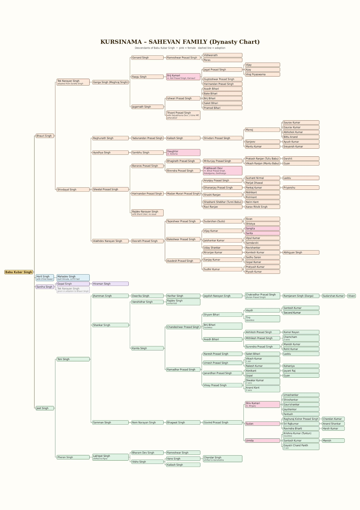

सहेवान
The Sahevan family of Kajoor, Block Mohra, Gaya ji, Bihar (805131) – a zamindar family whose lands ran from Maradi in Gaya to Najaddi in Nawada, with holdings in Jehanabad.
Explore
History of the Sahevan family
The Sahevan family of Village Kajoor, Block Mohra, District Gaya ji, Bihar (805131) was a prominent zamindar family of Gaya district.
The zamindari
The family held zamindari from Maradi in Gaya district to Najaddi in Nawada district (by present-day names), and in many areas of Jehanabad district. The land was approximately 21,000 bigha.
Bhoodan Movement
The family donated acres of land to the Vinoba Bhave Bhoodan Movement, for the uplift of depressed classes and landless people.
Division into estates
As the dynasty grew, the family divided into different zamindaris and estates. The prominent ones are:
- Manjhwe Estate
- Zamindar Babu Harinandan Prasad Singh
- Zamindar Babu Govind Prasad Singh
- Zamindar Babu Chakradhar Prasad Singh alias Jhulan Prasad Singh
- Zamindar Babu Kamla Prasad Singh
Where the family lives
Family members live in the villages of Kajoor, Manjhwe, Pipra and Karishoba, in Gaya and Nawada districts.
Prominent people
The family includes many top officials, leaders, entrepreneurs, engineers and doctors.
- Satyabhama Devi, wife of Triveni Prasad Singh, was Member of Parliament from the Jehanabad Lok Sabha constituency from 1957 to 1967.
- Arunjay Prasad Singh, great-grandson of Sheetal Prasad Singh and grandson of Harinandan Prasad Singh, is a prominent engineer and Managing Director of many multinational companies.
- Ravi Ranjan is an electronics engineer and currently a Director at NXP Semiconductors.
- Parijat Dhawal, son of Arunjay Prasad Singh, holds a B.Tech and M.Tech from IIT Kharagpur and an MBA (Finance) from the University of Michigan, USA. He is a prominent finance-based entrepreneur. He is a grandson of Madan Murari Prasad Singh and great-grandson of Harinandan Prasad Singh.
- Nalini Kant (son of Shashank Shekhar) and Nishi Kant (son of Shashi Ranjan) are specialised electronics and computer engineers. They are great-grandsons of Zamindar Babu Harinandan Prasad Singh and grandsons of Madan Murari Prasad Singh.
Bhoodan: land given back
Acres of land donated so the landless could farm.
The family gave acres of land to the Bhoodan Movement led by Vinoba Bhave, to uplift depressed classes and landless people. This page can hold documents, photographs and recollections from elders.
Add your material
Donation records, village names and first-hand accounts can be added here.
Kursinama – dynasty chart
Descendants of Babu Kubar Singh. Tap the chart to zoom in; tap again to fit the screen.


Family tree
Tap a name to open its branch. Pink = female. Dashed = adoption. Based on the Kursinama chart.
Estates and villages
Manjhwe Estate
Zamindar Babu Harinandan Prasad Singh.
Govind Prasad Singh
Zamindar Babu Govind Prasad Singh.
Chakradhar Prasad Singh
Zamindar Babu Chakradhar Prasad Singh, alias Jhulan Prasad Singh.
Kamla Prasad Singh
Zamindar Babu Kamla Prasad Singh.
Villages
| Village | District |
|---|---|
| Kajoor | Gaya |
| Manjhwe | Gaya / Nawada |
| Pipra | Gaya / Nawada |
| Karishoba | Gaya / Nawada |
Notable people
The family includes senior officials, political leaders, entrepreneurs, engineers and doctors.
Satyabhama Devi
Wife of Triveni Prasad Singh. Member of Parliament, Jehanabad Lok Sabha, 1957–1967.
Arunjay Prasad Singh
Engineer and Managing Director of several multinational companies.
Ravi Ranjan
Electronics engineer; Director at NXP Semiconductors.
Parijat Dhawal
Son of Arunjay Prasad Singh. B.Tech and M.Tech, IIT Kharagpur; MBA (Finance), University of Michigan. Finance entrepreneur.
Nalini Kant & Nishi Kant
Sons of Shashank Shekhar and Shashi Ranjan. Specialised electronics and computer engineers.
Contact
Address
Village Kajoor, Block Mohra, District Gaya ji, Bihar 805131, India